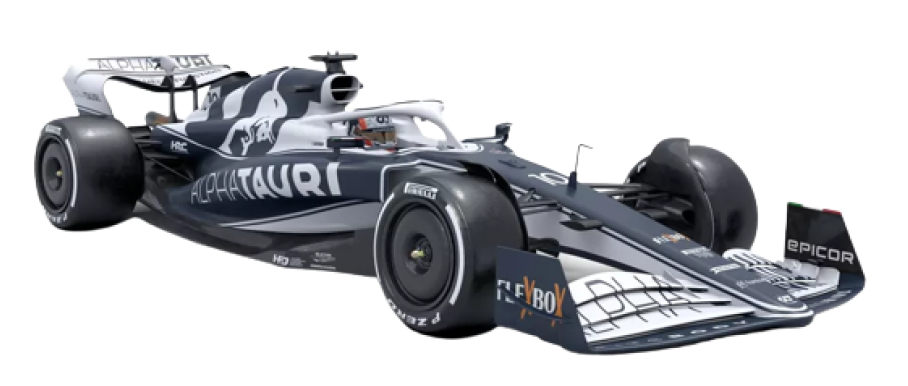

WHO IS IT?
Pierre Gasly is a French racing driver who works in Formula 1 for the AlphaTauri team. He competed in, and was runner-up, in the Formula Renault 3.5 Series in 2014, when he was signed by the Arden team under the Red Bull Junior Team program.
Scuderia AlphaTauri, commonly known as AlphaTauri and racing as Scuderia AlphaTauri Honda, is a Formula 1 team and constructor based in Faença, Italy. It is one of two Formula 1 teams owned by Austrian energy drink company Red Bull, the other being Red Bull Racing.
CAR TO 2022
“The car seems to be taller, in addition to having different details on the rear wings and, mainly, the front, with a kind of muzzle attached to the beak”
TerraAT-03
A CAR TO SURPRISE
